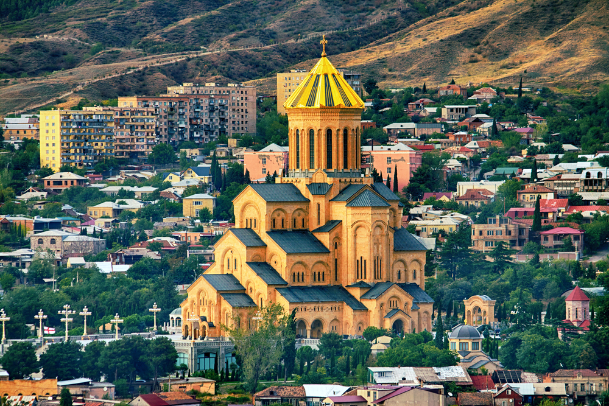

Официальный сайт: https://tbilisi.gov.ge/
Дополнительные информационные ресурсы, посвященные городу:
https://tbilisilife.com/?utm_referrer=https%3A%2F%2Fyandex.ru%2F
https://tbilisilocalguide.com/
https://madloba.info/blog/life-in-georgia/poleznye-resursy-dlya-inostrancev-v-gruzii/
Общие сведения о городе:Тбилиси - столица Грузии, расположенная в восточной части страны на берегах Куры (Мтквари). Это древний город, основанный в 5 веке, в котором сейчас проживают более 1 млн. человек. Тбилиси - один из самых очаровательных городов Кавказа, где среди узких атмосферных улочек, уютных старых двориков и кривых домов скрыты удивительные достопримечательности и уникальные сокровища. Несмотря на то, что за свою полутора тысячелетнюю историю Тбилиси был разрушен и перестроен несколько десятков раз, старый город сохранил средневековый шарм и в значительной степени свое оригинальное состояние.
Население - 1.1 млн человек.
Площадь - 720 квадратных километров.
Язык - грузинский.
Валюта - грузинский лари.
Время - UTC +4.
Виза - не нужна на срок пребывания до 360 дней.
Тбилиси расположен в центре Восточной Грузии в котловине, ограниченной отрогами Триалетского хребта, Сагурамского хребета и Иорского нагорья. Климат - умеренно-континентальный с относительно жарким летом и прохладной зимой. Благодаря близости к тёплым морям (Чёрное и Каспийское) и Большому Кавказскому хребту, который блокирует вторжение воздушных масс, климат Тбилиси теплее, чем в городах на тех же широтах. Среднегодовая температура составляет 12,7 градусов. Самый холодный месяц январь с температурой около 0. Средняя температура лета более 20 градусов.
Лучшее время для посещения Тбилиси период с мая по октябрь. В июле и августе может быть довольно жарко. Чтобы насладиться Тбилиси без туристов лучше приехать зимой или в начале весны.
Карта города, вид со спутника:Официально историю Тбилиси принято отсчитывать с V века. Город был заложен царём Иберии Вахтангом Горгасали.
С 626 года Тбилиси подвергался регулярным нашествиям арабских армий. Вражеские войска грабили местное население и разоряли город.
С 1801 по 1917 годы Грузия была частью Российской империи. За этот период Тбилиси обрёл долгожданную стабильность и покровительство более могущественной державы.
После Октябрьской революции Тбилиси стал столицей независимой Грузии, которой являлся вплоть до 1926 года.
После развала Советского Союза город вновь обрёл прежний статус административного и культурного центра.
Фотогалерея:
| Гора Мтацминда В самом центре Тбилиси возвышается гора Мтацминда (или Гора Давида), названная в честь Святого Давида Гареджи, что жил отшельником в пещере на одном из ее склонов. На ее вершине вы увидите красивое здание верхней станции фуникулера, телевизионную башню высотой 276 м, а также гигантский развлекательный парк с кафе, водными горками, каруселями, и 80-метровым колесом обозрения. | |
|  | Кафедральный Собор Сиони Отойдя от шума и суеты Старого города, загляните в Кафедральный собор Сиони, который является одним из самых известных памятников Тбилиси. Церковь изначально была построена в VI веке, затем разрушена завоевателями и реконструирована несколько раз. Расположенный на улице Сиони и выходящий на реку Мктвари Собор является типичным примером средневековой грузинской церковной архитектуры, внешне довольно скромный и сдержанный, без каких-либо элементов декора. Его единственное украшение — высокая башня с остроконечным шатровым куполом, возвышающаяся над центральной частью Сиони. |
| Мост Мира Пешеходный мост мира, соединяющий Старый Тбилиси с новыми районами города — одно из самых значительных сооружений в грузинской столице. Несмотря на свой молодой возраст — эта одна из самых ярких и привлекательных достопримечательностей города. Это мост с фигурной крышей из стеклянных панелей в духе Нормана Фостера, спроектированный итальянским архитектором Микеле де Лукки совместно с Филиппом Мартино, дизайнером-осветителем из Франции. В его дизайне использована любопытная система иллюминации: по вечерам каждый час 30 000 ламп транслируют сообщение азбукой Морзе. Оно состоит из названий элементов периодической таблицы Менделеева, которые составляют человеческое тело. По словам Лукки, «это сообщение — гимн жизни и мира между людьми и народами». | |
| Серные бани В нескольких минутах ходьбы к югу от площади Мейдан вы обнаружите скопление странных кирпичных куполов, поднимающихся с земли позади небольшого парка. Это знаменитые серные бани старого квартала Абанотубани. Александра Дюма и Пушкин купались здесь, а последний охарактеризовал их как «лучшие ванны в его жизни». Это историческое место известно своими теплыми серными источниками. Они расположены у подножия Нарикалы, возле набережной Куры. | |
| Мать Грузия Монумент «Мать Картли» или «Мать-Грузия» в Тбилиси находится в исторической части столицы на вершине холма Сололаки. Его высота достигает 20 метров. Построенный в 1958 году, памятник стал символом города и страны. Скульптура изображает женщину, которая держит в руках чашу с вином и меч. Считается, что это отражает национальный характер: вино — для друзей, меч — для врагов. Монумент находится на самом краю холма, обойти его можно только сзади, у ног скульптуры находится скамейка и смотровая площадка, откуда открывается красивый вид на Тбилиси. |
«Тбилисо»
ნეტავ სად არის კიდევ ცა,
უძიროდ ლურჯი, ხალასი,
სწორედ ისეთი, როგორც შენია.
ნაიარევი წარსული,
ნანგრევი ნარიყალასი,
ჭაღარასავით შემოგრჩენია.
თბილისო - მზის და ვარდების მხარეო,
უშენოდ - სიცოცხლეც არ მინდა,
სად არის სხვაგან ახალი ვარაზი,
სად არის ჭაღარა მთაწმინდა.
ჩაივლი მტკვართან ხეივანს
და გაზაფხულის მაყრები
მეგებებიან მწვანე ჭადრები.
აქ არ იმღერო, ძნელია,
აქ ხომ ვერხვებიც მღერიან
და ცაც ფირუზზე ლურჯი ფერია.